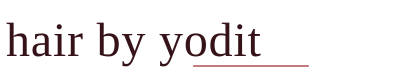
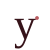
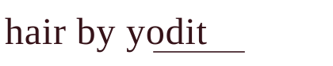

Style-guide-derived wordmark and monogram. Newsreader display weight 500 in Tamarind #361319. Rose underline #B85A5F beneath "yodit" as the brand's signature — echoes the price-reveal underline that runs on the live site.
On Paper (default)

On Sand
On Camel
Lowercase 'y' with the Rose dot as a tittle-like accent. For favicon, social profile picture, and any square context where the full wordmark won't fit.
Sizes on Paper

144 × 144 — social
96 × 96 — app icon
64 × 64
32 × 32 — favicon
Header (≈180px)
Footer (≈140px)
Single-colour wordmark for contexts where the Rose accent can't render — engraving, single-plate print, fax-grade reproduction.
On Paper

Files in this folder: logo.svg (primary wordmark, Tamarind + Rose), logo-mark.svg (monogram), logo-mono.svg (single-colour wordmark).
Fonts: the SVGs reference Newsreader (Google Fonts, SIL OFL). When rendered in a browser or in design software with Newsreader installed, they will look correct. If exporting to PNG or PDF without the font present, the wordmark will fall back to Times / Georgia and the underline will misalign slightly.
For raster export (PNG / JPG for social, business cards): open logo.svg in Figma or Inkscape with Newsreader installed, render at the target size, export PNG. For ultimate portability, also export a version with text converted to outlines — that version works everywhere without any font dependency.
Spacing rules: clear space around the wordmark equals the height of the lowercase "x" in "yodit" — roughly 18% of the wordmark height. Don't crowd it.
Minimum size: wordmark legible down to 96px wide. Below that, switch to the monogram.